VMware虚拟机安装Linux系统(详解版)
许多新手连 Windows 的安装都不太熟悉，更别提 Linux 的安装了；即使安装成功了，也有可能破坏现有的 Windows 系统，比如导致硬盘数据丢失、Windows 无法开机等。所以一直以来，安装 Linux 系统都是初学者的噩梦。
然而，通过虚拟机技术很容易冲破这种困境。由于虚拟机安装 Linux 所有的操作（例如硬盘分区、删除或修改数据）都是在虚拟硬盘中进行，因此不会对现有的数据和系统造成任何损失，即使安装失败了也无所谓。
所谓虚拟机（virtual machine），就是通过软件技术虚拟出来的一台计算机，它在使用层面和真实的计算机并没有什么区别。
常见的虚拟机软件有 VMware Workstation（简称 VMware）、VirtualBox、Microsoft Virtual PC 等，其中 VMware 市场占有率最高，所以本节以 VMware 为例来讲解 Linux 的安装。
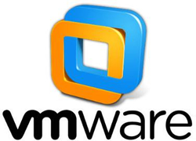
VMware 可以使你在一台计算机上同时运行多个操作系统，例如同时运行 Windows、Linux 和 Mac OS。在计算机上直接安装多个操作系统，同一个时刻只能运行一个操作系统，重启才可以切换；而 Vmware 可以同时运行多个操作系统，可以像 Windows 应用程序一样来回切换。
VMware 有两个版本，分别是 VMware Workstation Pro 和 VMware Workstation Player。
我们从互联网上找到了一个带密钥的 Pro 版本，并放在了百度网盘，大家可以无限制的使用：
VMware Workstation Pro 下载地址：https://pan.baidu.com/s/1XXhFFh0Fx0vzvcd1A543Yg，提取码：2o19（下载得到的压缩包中含有 VMware 安装所需的秘钥，亲测有效，可放心使用）
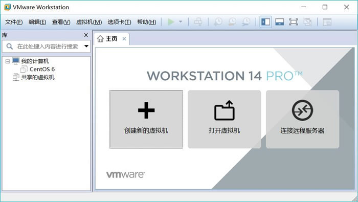
图 1 VMware 主界面
点击“创建新的虚拟机”，进入虚拟机设置向导界面，如图 2 所示，这里建议初学者选择“典型（推荐）”。
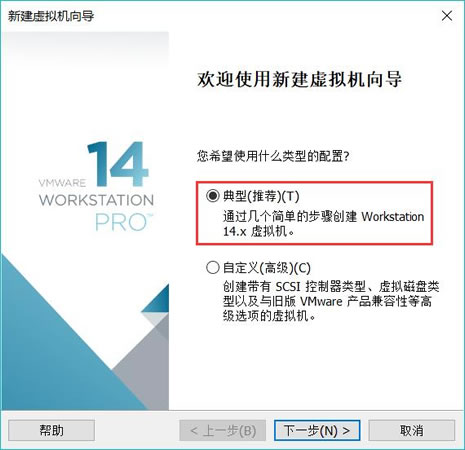
图 2 虚拟机设置向导界面
点击“下一步”，进入“安装操作系统”界面，若初学者已提前准备好 Linux 系统的映像文件（.iso 文件），此处可选择“安装程序光盘映像文件”，并通过“浏览”按钮找到要安装 Linux 系统的 iso 文件；否则选择“稍后安装操作系统”，如图 3 所示。
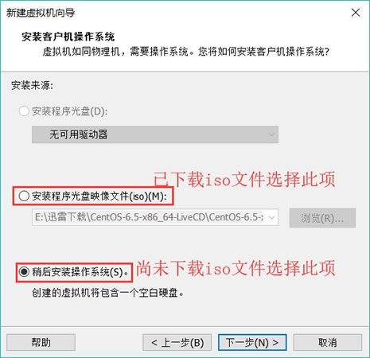
图 3 安装客户机操作系统
建议初学者提前下载好 CenOS 映像系统，给大家提供 CentOS 6.5 映像文件迅雷下载地址（点击链接或复制链接到迅雷即可开始下载）：
点击“下一步”，进入“选择客户机操作系统”，选择“Linux”，并在“版本”下拉列表框中选择要安装的对应的 Linux 版本，这里选择“CentOS 6”，如图 4 所示。
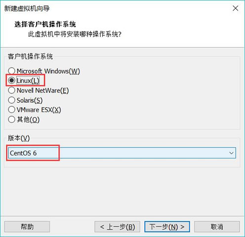
图 4 选择客户机操作系统
继续“下一步”，进入“命名虚拟机”界面，给虚拟机起一个名字（如“CentOS 6.5”），然后单击“浏览”按钮，选择虚拟机系统安装文件的保存位置，如图 5 所示。
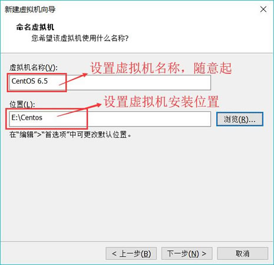
图 5 命名虚拟机
单击"下一步"按钮，进入"指定磁盘容量"界面。默认虚拟硬盘大小为 20GB（虚拟硬盘会以文件形式存放在虚拟机系统安装目录中）。虚拟硬盘的空间可以根据需要调整大小，但不用担心其占用的空间，因为实际占用的空间还是以安装的系统大小而非此处划分的硬盘大小为依据的。
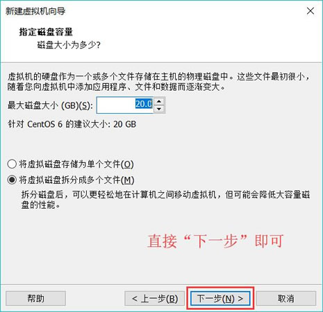
图 6 指定磁盘容量界面
接下来进入“已准备好创建虚拟机”界面，确认虚拟机设置，不需改动则单击"完成"按钮，开始创建虚拟机，如图 7 所示。
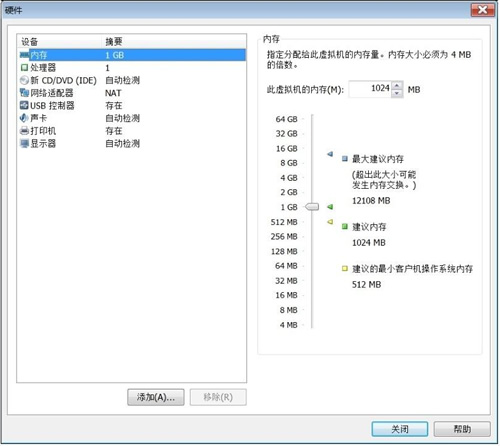
图 8 定制硬件
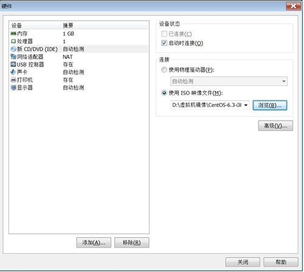
图 9 光盘配置
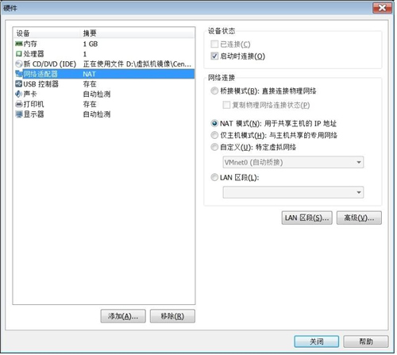
图 10 网络适配器配置
以上对于 VMware 网络的描述，读者看完了可能会有点困惑。简单总结—下，在 VMware 安装好后，会生成两个虚拟网卡 VMnet1 和 VMnet8 (在 Windows 系统的"网络连接"中可以査看到），如图 11 所示。
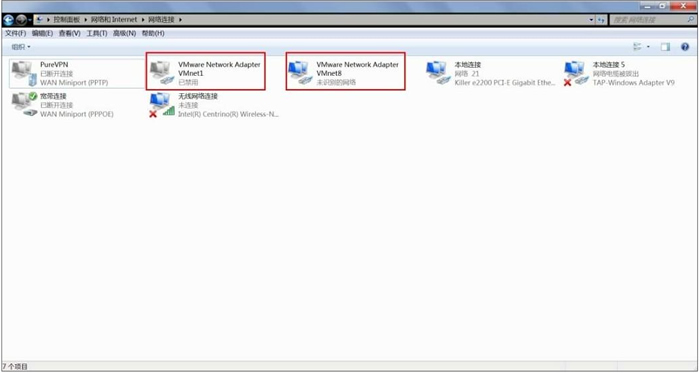
图 11 虚拟网卡
其中常用设置有以下 2 种：
硬盘配置设置完成后，点击图 7 中的“完成”按钮，就成功创建了一台虚拟机！对于在图 3 中提前下载好 CentOS 映像并作相应设置的读者，此时 VMware 会直接启动 Linux CentOS 系统，如图 12 所示。
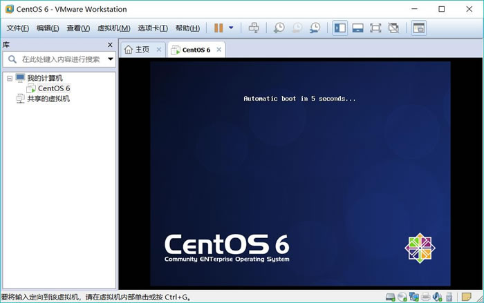
图 12 VMware 启动 Linux 系统
而在图 3 中选择“稍后安装操作系统”的读者，此时必须先下载某个 Linux 映像文件，并通过“编辑虚拟机设置->CD/DVD（IDE）”中，选择“使用ISO映像文件”，手动添加 iso 文件，然后点击“确定”即可手动开启 Linux 系统。如图 13 所示。
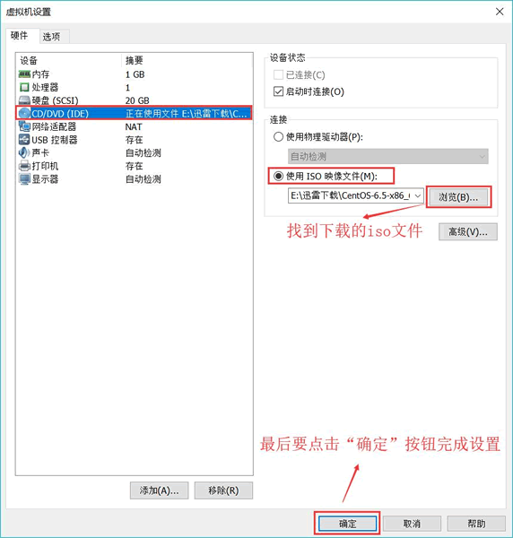
图 13 虚拟机设置
经过以上几步，我们就成功地用 VMware 虚拟机安装好了 Linux 系统。
然而，通过虚拟机技术很容易冲破这种困境。由于虚拟机安装 Linux 所有的操作（例如硬盘分区、删除或修改数据）都是在虚拟硬盘中进行，因此不会对现有的数据和系统造成任何损失，即使安装失败了也无所谓。
所谓虚拟机（virtual machine），就是通过软件技术虚拟出来的一台计算机，它在使用层面和真实的计算机并没有什么区别。
常见的虚拟机软件有 VMware Workstation（简称 VMware）、VirtualBox、Microsoft Virtual PC 等，其中 VMware 市场占有率最高，所以本节以 VMware 为例来讲解 Linux 的安装。
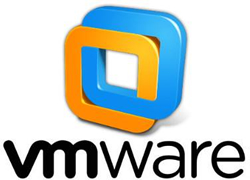
站在使用者的角度讲，虚拟机系统和真实安装的系统是一样的，甚至可以在一台计算机上将几个虚拟机系统连接为一个局域网或连接到互联网。
在虚拟机系统中，每一台虚拟产生的计算机都被称为“虚拟机”，而用来存储所有虚拟机的计算机则被称为“宿主机”。例如，你的 Windows 系统就是宿主机，而 VMware 安装的 Linux 则为虚拟机。VMware下载和安装
绝大多数初学者使用的是 Windows，所以本节只讲解在 Windows 下安装 VMware 和 Linux。VMware 有两个版本，分别是 VMware Workstation Pro 和 VMware Workstation Player。
- Player 是免费版本，只能用于非商业用途，适合个人学习。
- Pro 是商业版本，功能最强大，付费以后才能使用。
我们从互联网上找到了一个带密钥的 Pro 版本，并放在了百度网盘，大家可以无限制的使用：
VMware Workstation Pro 下载地址：https://pan.baidu.com/s/1XXhFFh0Fx0vzvcd1A543Yg，提取码：2o19（下载得到的压缩包中含有 VMware 安装所需的秘钥，亲测有效，可放心使用）
由于 VMware 的安装过程比较简单，与安装普通软件无异，因此不再过多阐述。这里假设读者已经下载并已安装好 VMware，接下来直接开始使用 VMware 安装 Linux 系统。VMware 对计算机的硬件配置要求比较高，配置低了虚拟机会很慢，甚至不能运行。理论上，配置越高越好，现在主流的计算机配置都可以达到运行 VMware 的要求。千万不要用多年珍藏的老古董来运行 VMware，我保证你将会失去耐心。
VMware 安装 Linux 系统
启动 VMware，进入其主界面，如图 1 所示。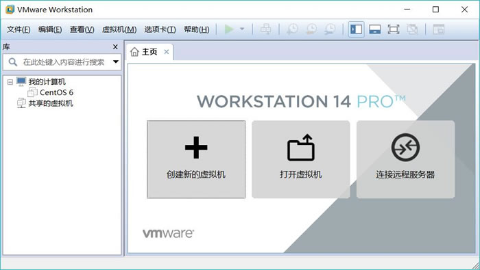
图 1 VMware 主界面
点击“创建新的虚拟机”，进入虚拟机设置向导界面，如图 2 所示，这里建议初学者选择“典型（推荐）”。
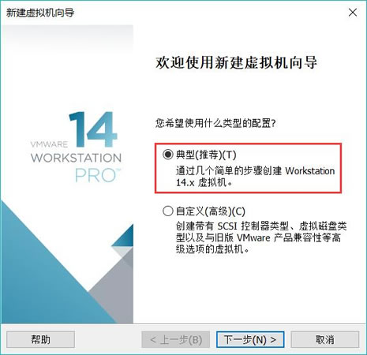
图 2 虚拟机设置向导界面
点击“下一步”，进入“安装操作系统”界面，若初学者已提前准备好 Linux 系统的映像文件（.iso 文件），此处可选择“安装程序光盘映像文件”，并通过“浏览”按钮找到要安装 Linux 系统的 iso 文件；否则选择“稍后安装操作系统”，如图 3 所示。
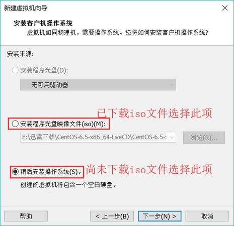
图 3 安装客户机操作系统
建议初学者提前下载好 CenOS 映像系统，给大家提供 CentOS 6.5 映像文件迅雷下载地址（点击链接或复制链接到迅雷即可开始下载）：
- 32 位 CentOS 6.5 映像下载：http://archive.kernel.org/centos-vault/6.5/isos/i386/CentOS-6.5-i386-bin-DVD1.iso
- 64 位 CentOS 6.5 映像下载：http://archive.kernel.org/centos-vault/6.5/isos/x86_64/CentOS-6.5-x86_64-bin-DVD1.iso
点击“下一步”，进入“选择客户机操作系统”，选择“Linux”，并在“版本”下拉列表框中选择要安装的对应的 Linux 版本，这里选择“CentOS 6”，如图 4 所示。
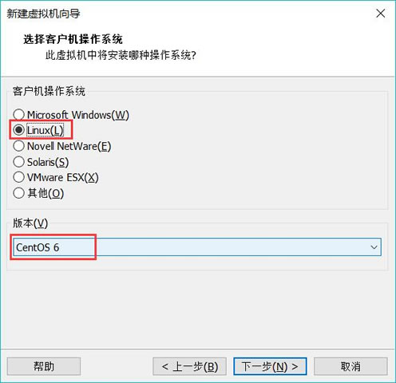
图 4 选择客户机操作系统
继续“下一步”，进入“命名虚拟机”界面，给虚拟机起一个名字（如“CentOS 6.5”），然后单击“浏览”按钮，选择虚拟机系统安装文件的保存位置，如图 5 所示。
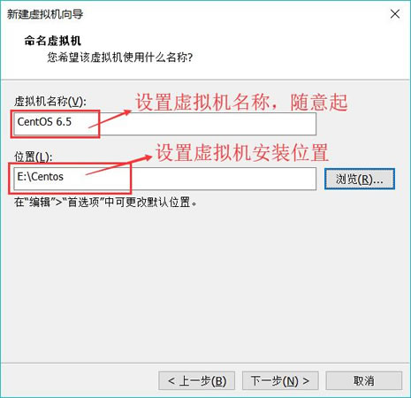
图 5 命名虚拟机
单击"下一步"按钮，进入"指定磁盘容量"界面。默认虚拟硬盘大小为 20GB（虚拟硬盘会以文件形式存放在虚拟机系统安装目录中）。虚拟硬盘的空间可以根据需要调整大小，但不用担心其占用的空间，因为实际占用的空间还是以安装的系统大小而非此处划分的硬盘大小为依据的。
比如你设定了硬盘容量为 20GB，但是安装 Linux 只用了 4GB，那么实际上只会在你的 Windows 分区中占用 4GB 的空间，占用空间会随着虚拟机系统使用的空间增加而增加。
此“指定磁盘容量”界面保持默认设置即可，如图 6 所示。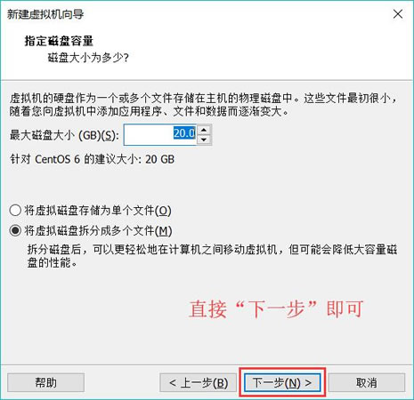
图 6 指定磁盘容量界面
接下来进入“已准备好创建虚拟机”界面，确认虚拟机设置，不需改动则单击"完成"按钮，开始创建虚拟机，如图 7 所示。
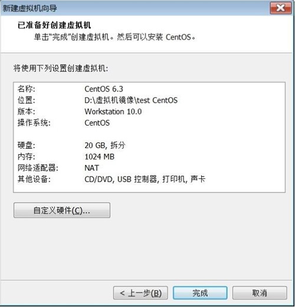
图 7 已准备好创建虚拟机
图 7 已准备好创建虚拟机
这里，我们可以略做调整，单击"自定义硬件"按钮进入硬件调整界面。为了让虚拟机中的系统运行速度快一点，我们可以选择"内存"调整虚拟机内存大小，但是建议虚拟机内存不要超过宿主机内存的一半。CentOS6.x 最少需要 628MB 及以上内存分配，否则会开启简易安装过程，如图 8 所示。
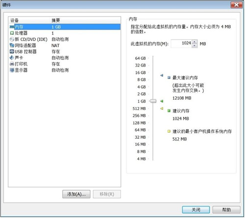
图 8 定制硬件
选择“新CD/DVD(IDE)”可以选择光驱配置。如果选择“使用物理驱动器”，则虚拟机会使用宿主机的物理光驱；如果选择“使用 ISO 映像文件”，则可以直接加载 ISO 映像文件，单击“浏览”按钮找到 ISO 映像文件位置即可，如图 9 所示。
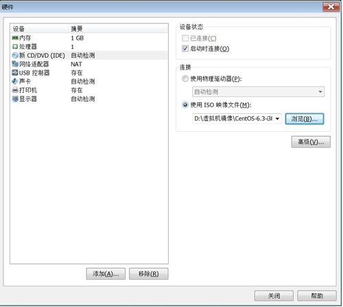
图 9 光盘配置
选择"网络适配器"将进入 VMware 新手设置中最难以理解的部分——设置网络类型，如图 10 所示。此设置较复杂，不过网络适配器配置在虚拟机系统安装完成后还可以再行修改。
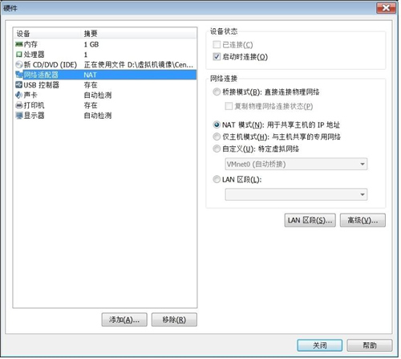
图 10 网络适配器配置
VMware 提供的网络连接有 5 种，分别是"桥接模式"、"NAT 模式"、"仅主机模式"、"自定义"和"LAN 区段"：
- 桥接模式：相当于虚拟机的网卡和宿主机的物理网卡均连接到虚拟机软件所提供的 VMnet0 虚拟交换机上，因此虚拟机和宿主机是平等的，相当于一个网络中的两台计算机。这种设置既可以保证虚拟机和宿主机通信，也可以和局域网内的其他主机通信，还可以连接 Internet，是限制最少的连接方式，推荐新手使用。
- NAT 模式：相当于虚拟机的网卡和宿主机的虚拟网卡 VMnet8 连接到虚拟机软件所提供的 VMnet8 虚拟交换机上，因此本机是通过 VMnet8 虚拟网卡通信的。在这种网络结构中，VMware 为虚拟机提供了一个虚拟的 NAT 服务器和一个虚拟的 DHCP 服务器，虚拟机利用这两个服务器可以连接到 Intemet。所以，在正常情况下，虚拟机系统只要设定自动获取 IP 地址，就能既和宿主机通信，又能连接到 Internet了。但是这种设置不能连接局域网内的其他主机。
- 仅主机模式：宿主机和虚拟机通信使用的是 VMware 的虚拟网卡 VMnet1，但是这种连接没有 NAT 服务器为虚拟机提供路由功能，所以仅主机网络只能连接宿主机，不能连接局域网，也不能连接 Internet 网络。
- 自定义网络：可以手工选择使用哪块虚拟机网卡。如果选择 Vmnet1，就相当于桥接网络；如果选择 VMnet8，就相当于 NAT 网络。
- LAN 区段：这是新版 VMware 新增的功能，类似于交换机中的 VLAN（虚拟局域网），可以在多台虚拟机中划分不同的虚拟网络。
以上对于 VMware 网络的描述，读者看完了可能会有点困惑。简单总结—下，在 VMware 安装好后，会生成两个虚拟网卡 VMnet1 和 VMnet8 (在 Windows 系统的"网络连接"中可以査看到），如图 11 所示。
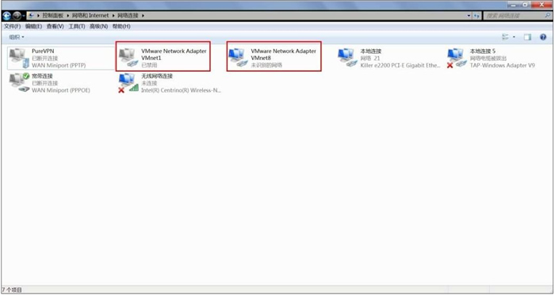
图 11 虚拟网卡
其中常用设置有以下 2 种：
- 需要宿主机的 Windows 和虚拟机的 Linux 能够进行网络连接，使用"桥接模式"（桥接时，Linux 也可以访问互联网，只是虚拟机需要配置和宿主机 Windows 同样的联网环境）；
- 需要宿主机的 Windows 和虚拟机的 Linux 能够进行网络连接，同时虚拟机的 Linux 可以通过宿主机的 Windows 连入互联网，使用"NAT模式"。
硬盘配置设置完成后，点击图 7 中的“完成”按钮，就成功创建了一台虚拟机！对于在图 3 中提前下载好 CentOS 映像并作相应设置的读者，此时 VMware 会直接启动 Linux CentOS 系统，如图 12 所示。
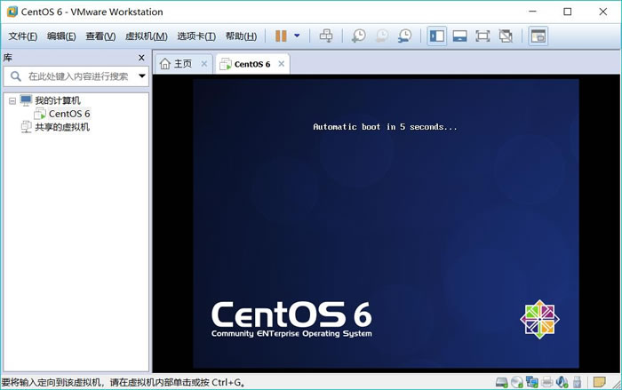
图 12 VMware 启动 Linux 系统
而在图 3 中选择“稍后安装操作系统”的读者，此时必须先下载某个 Linux 映像文件，并通过“编辑虚拟机设置->CD/DVD（IDE）”中，选择“使用ISO映像文件”，手动添加 iso 文件，然后点击“确定”即可手动开启 Linux 系统。如图 13 所示。
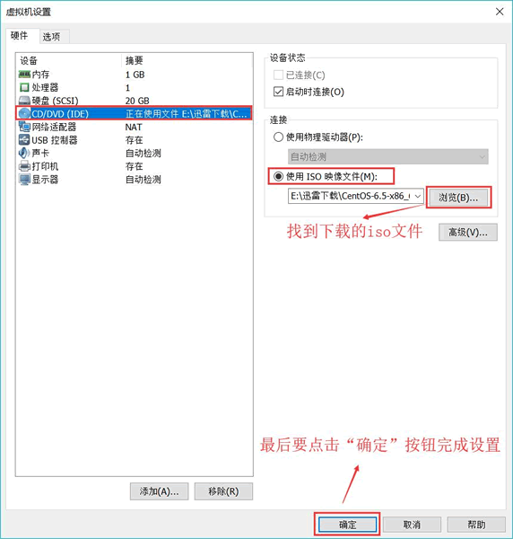
图 13 虚拟机设置
经过以上几步，我们就成功地用 VMware 虚拟机安装好了 Linux 系统。
关注公众号「站长严长生」，在手机上阅读所有教程，随时随地都能学习。内含一款搜索神器，免费下载全网书籍和视频。

微信扫码关注公众号